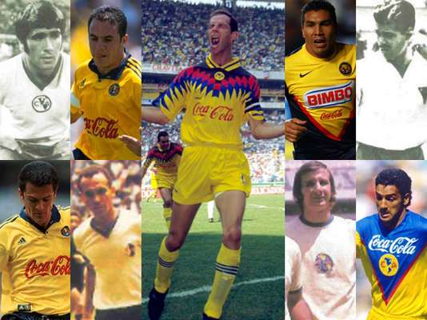

JUGADORES LEYENDA
ENRIQUE BORJA
Nacio el 30 de diciembre de 1945.Hablar de Enrique Borja es referirnos a uno de los grandes idolos no solo del futbol sino del deporte en si.
Su carisma y popularidad se quedaron manifiesto el dia de su retiro en el Estadio Azteca, en septiembre de 1977, cuando miles de gargantas corearon su nombre en su despedida de las canchas
CARLOS REINOSO
NOMBRE COMPLETO:Carlos Enzo Reinoso Valdenegro
Posicion: Medio
Fecha de nacimiento: 7 de marzo de 1946
Lugar: Snatiago de Chile
Fecha de Debut:26 de febrero de 1970
Partido: America 1- 1 Atlante
Primer gol con America:8 de marzo de 1970
Partido: America 1-2 Atlas
CRISTOBAL ORTEGA
Nombre completo: Cristobal Ortega Martinez
Fecha de Nacimiento: 25 de julio de 1958
Lugar: Mexco Df
Apodo: osito
Fecha de Debut: 5 octubre de 1974
Partido: America 4-0 Ciudad Madero
Posicion: Extremo derecho y medio volante
Años en el Club: 18
ALFREDO TENA
Alfredo Tena Garduño, nacio el 21 de noviemre de 1956 en Mexico D F. LLego al America en la temporada de 1973-74, luego de jugar en el equipo principado del club australiano.
Empezo en juveniles y jugo con las reservas americanistas donde fue campeon del torneo nacional de reservas.
Su debut en el equipo mayor llego de manera fortuita, al sustituir a Luis Miguel Barbena, quien era el titular indiscutible y habia sido operado de urgencia.
JAVIER AGUIRRE
Fecha de nacimiento: 1 de diciembre de 1958
Lugar de nacimiento: Mexico D.F
Nacionalidad: Mexicana
Equipos como jugador:America, Aztecas de los Angeles, Atlante, Osasun de pamplonay Guadalajara.
Equipos como tecnico:Pachuca en Mexico, Seleccion Mexicana,Osasuna de pamplona y actualmente Atletico de Madrid
Logros como jugador: 1 titulo de liga con America en 1983-84. Mundialista en Mexico 86
HECTOR MIGUEL ZELADA
Nacio el 30 de abril de 1958 en maciel, Santa FE, Argentina.Llego al America en la temporada 78-79 procedente del club Rosario Central.
Con escasos 20 años vino a Mexico se incorporo a nustro equipo en un momento de crisis futbolistica y en la que ademas encontro mucha competencia con Fransisco Castrejon y Pedro Soto. Sin embargo tuvo carisma con la aficion y eso lo ayudo a subir su nivel.
DANIEL ALBERTO BRAILOWSKI
Lugar de nacimiento: Buenos aires, Argentina
Apodo: el Ruso
Posicion: Mediocampista
Edad: 54 años
Numero que utilizaba: 23
Goles con America: 32
Temporadas con America:3
Trayectoria como jugador:All boys y peñarol (uruguay);
Independiente(argentina) America (Mexico) y Macabi Haifa(israel)
ANTONIO CARLOS SANTOS
Extraordinario delantero brasileño que llego a las Aguilas a mediados de los ochentas..Nacio el 8 de junio de 1964
Jugo en el Fulminese a partir de 1980 Milito en el Botafogo y en 1985 fue contratado por el America
Con nuestro equipo, fue bicmpeon de Liga monarca de la Concacaf y de la interamericana
FRANCOIS OMAM BIYIK
NombreFrancois Omam Biyik
Fecha de nacimiento:21 de mayo de 1996
Lugar de nacimiento: Sakbeyeme, Camerun
Temporadas con Ameria: 4
Goles con America: 53
Equipos en Mexico: America y Puebla
Ultima Temporada: verano 99
LUIS ROBERTO ALVES ZAGUE
Nombre:Luis Roberto Alves Dos Santos Gavranic
Apodo:Zaguinho
Posicion: Delantero
Fecha de nacimiento:23 de mayo de 1967
Nacionalidad: mexicana
Lugar de nacimiento: Ciudad de Mexico
Estatura: 1.93 mts.
Fecha de Debut: 10 de noviembre de 1980
Partido: America 0-0 Tecos de la UAG
Nuerom:17
